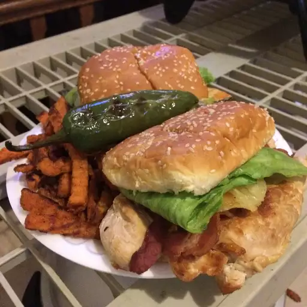

< Home
Aloha Chicken Burgers

Christoper Jaimes, Aloha Chicken Burger, 2017, via
Allrecipes.com
Tasty burger in between a toasted sesame bun with a grilled chicken patty, swiss cheese, delectable bacon, and a grilled jalapeno to top it off.
- 2 skinless, boneless chicken breast halves
- 1/4cup soy sauce
- 13 slices thick cut bacon
- 2 large hamburger buns, split
- 1 tablespoon softened butter
- 1/4 cup teriyaki sauce
- 2 slices Swiss cheese
- 2 tablespoons mayonnaise
- 2 slices pineapple
- 2 slices of iceberg lettuce
- 2 slices tomato
- Step 1: Place chicken breasts into a plastic zipper bag with soy sauce, seal the bag, and marinate in refrigerator for 30 minutes. While chicken is marinating, place bacon in a large, deep skillet, and cook over medium-high heat, occasionally turning until evenly browned, about 10 minutes. Drain bacon slices on a paper towel-lined plate, and set aside. Spread cut sides of hamburger buns with butter.
- Step 2: Preheat an outdoor grill for medium heat and lightly oil the grate
- Step 3: Remove chicken from soy sauce, and discard excess soy sauce. Place chicken breasts onto the preheated grill, and grill until chicken shows good grill marks, is no longer pink inside, and juices run clear, 4 to 5 minutes per side. When chicken is almost done, brush each piece generously on both sides with teriyaki sauce to finish grilling. Place a slice of Swiss cheese on each chicken breast, and cover with a lid to help cheese melt onto chicken.
- Step 4: While chicken is grilling, spread buns open on the grill and cook until toasted and showing grill lines, about 2 minutes. Set buns aside.
- Step 5: To assemble, spread grilled sides of each bun with mayonnaise, and top each bottom bun with a cooked chicken breast, 1 1/2 slices of bacon, a slice of pineapple, a slice from a head of lettuce, a slice of tomato, and top bun.